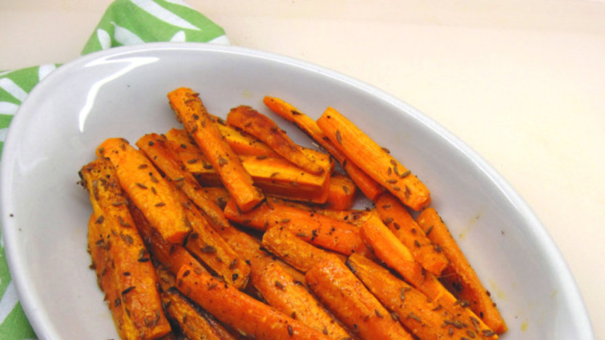

Zanahorias asadas con pesto
Probá estas riquísimas zanahorias al pesto, una deliciosa guarnición ideal para acompañar todo tipo de carnes.
Ingredientes
- Zanahorias grandes, 8
- Pesto, ½ taza
Para el pesto:
- Semillas de sésamo, c/n
- Hojas de albahaca, 1 ½ tazas
- Dientes de ajo, 3
- Nueces o piñones, ½ taza
- Aceite de oliva, ½ taza
- Sal, ½ cdita
- Pimienta negra, ¼ cdita
Elaboración
- Precalentar el horno a 200 ºC.
- Cortar las zanahorias en dos, y luego en bastones no muy finos.
- Mezclar las zanahorias con algunas cucharadas del pesto.
- Extender las zanahorias sobre una placa de horno previamente cubierta con papel manteca y lubricada con aceite.
- Hornear a fuego alto durante 40 minutos, dando vuelta a medio camino.
- Servir caliente con más pesto, si gustan.
- Para acompañar todo tipo de carnes.
Para el pesto:
- Colocar todos los ingredientes en una procesadora y accionar la máquina hasta que los ingredientes estén integrados.
- Conservar en heladera.